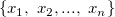
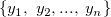
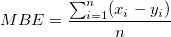

mbe (Mean-Bias-Error) function returns the mean bias error between pridiction and observation vector.
The mbe value between a prediction dataset y of n values  and an observation dataset x , is given by:

double mbe(dataset vobs, dataset vpred)
vobs
vpred
Return the mean bias error of a vector.
Note: Missing data, masked data and text in vobs and vpred won't be counted.
//Calculate the mean bias error of column A and B yr = mbe(col(A),col(B));